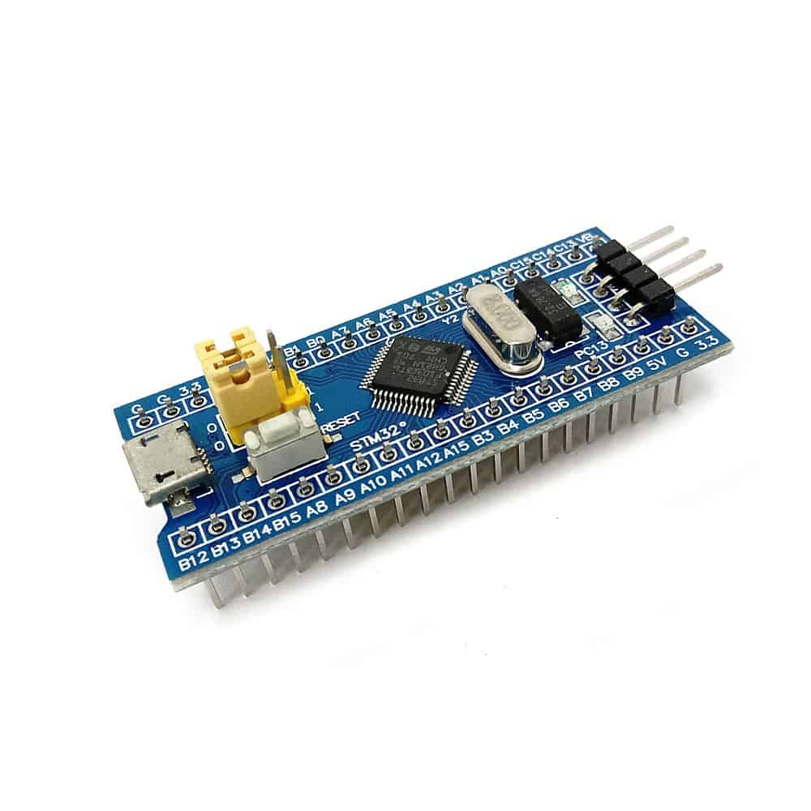
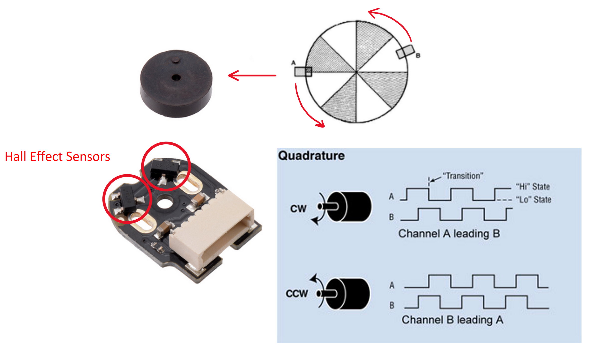
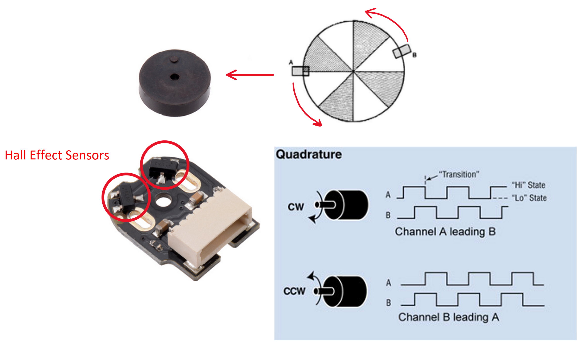
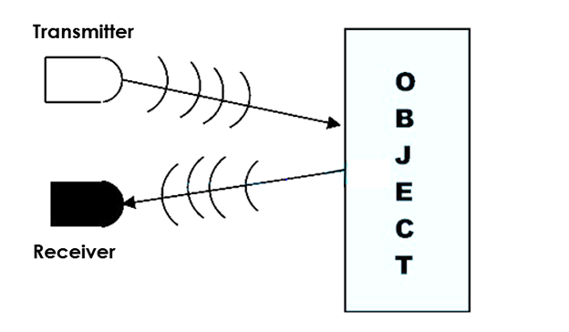
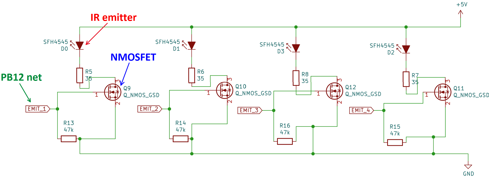
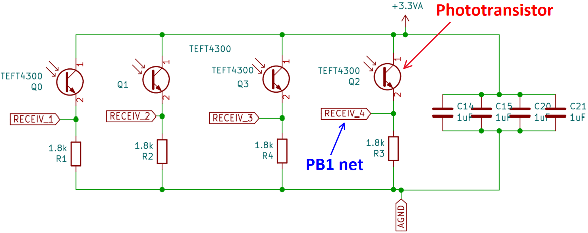

Schematic
By Colton Kaneria
Overview
This page includes explanations for the Micromouse schematic. Here, you will learn the purpose and functionality of each of the Micromouse's components.
MCU

The microcontroller is the brain of your mouse.
It communicates with the mouse's sensors to detect walls and direct the mouse's movements.
And most importantly, the microcontroller runs the mouse's
maze-solving algorithms.
For this project, we will use the STM32F103C8T6, otherwise known as the Bluepill.
Refer back to the Bluepill's schematic as you read this page,
because it interfaces with all other parts of the schematic.

Power Supply & ORing
Power Supply
Your micromouse will be powered by a battery and operate with three voltage domains: the battery's own voltage, 5V, and 3.3V.
To accomplish this, your board will use voltage regulators, which convert an input voltage to a lower output voltage.
 In the bottom schematic, your battery is connected to a switch, which when ON, connects your battery to the 5V regulator (LM1085-5.0)
This regulator takes the battery's voltage at its VI pin and outputs 5V at its VO pin.
Your components that need 5V will receive it through the +5V net at the output node.
In the bottom schematic, your battery is connected to a switch, which when ON, connects your battery to the 5V regulator (LM1085-5.0)
This regulator takes the battery's voltage at its VI pin and outputs 5V at its VO pin.
Your components that need 5V will receive it through the +5V net at the output node.
Similarly, in the top circuit, the 3.3V regulator steps down your 5V domain to a 3.3V domain.
Please note that there are two 3.3V nets on your schematic: +3V3 and +3.3VA.
The +3.3VA is a "filtered out" version of the +3V3 net. The 10 uH inductor filters out any "noise" or variations in the 3.3V voltage,
so the +3.3VA net is a stable 3.3V voltage for parts of your board that require extreme accuracy. For example, your IR sensors need
to measure the distance from your mouse to nearby walls. It is very important for their 3.3V to be consistent because any variations will offset the distance readings.
However, please note that the +5V_NET at the output of the 5V regulator is different
than the +5V arrow net seen throughout the rest of the schematic (including the input to the 3.3V regulator).
The ORing circuit allows the +5V_NET voltage to pass through to the +5V net when the mouse is powered by battery but not STLink.
Power ORing
The STLink is safe for the mouse only at 3.3V, so the ORing circuit protects the mouse from overvoltage
by disconnecting +5V from the +5V_NET regulator output and the VCC from the battery voltage when the STLink is connected.
This way, when both the battery and STLink are connected to the mouse, it will not get fried.
Below is the schematic for the ORing circuit. U5 and U6 are ideal diode ICs, enabled by the *CE pin.
 You may connect the STLink to either the J2 header or J5 header, but only J2 offers the ORing voltage protection mechanism with its +3V3_NET.
Normally, when the voltage at *CE is low, current is conducted from VIN to VOUT, passing the voltage through.
This voltage also reaches the MOSFET's gate, switching it ON and passing the battery voltage to the VCC net.
However, when the STLink is connected to J2, it supplies 3.3V to U6's *CE pin through the +3V3_NET,
opening the diode and preventing the regulator output 5V and battery voltage from reaching the rest of the mouse.
You may connect the STLink to either the J2 header or J5 header, but only J2 offers the ORing voltage protection mechanism with its +3V3_NET.
Normally, when the voltage at *CE is low, current is conducted from VIN to VOUT, passing the voltage through.
This voltage also reaches the MOSFET's gate, switching it ON and passing the battery voltage to the VCC net.
However, when the STLink is connected to J2, it supplies 3.3V to U6's *CE pin through the +3V3_NET,
opening the diode and preventing the regulator output 5V and battery voltage from reaching the rest of the mouse.
V_METER
 You may have noticed a voltage divider in the power supply schematic. This is designed to measure the voltage of your battery.
The V_METER net connects to one of the STM32's GPIO pins, allowing it to measure the voltage at the divider node.
The voltage divider is necessary because the STM32 pins cannot handle high voltages,
so the divider allows us to measure 1/3 of the battery's actual voltage instead.
After some simple math, you can calculate the battery's true voltage.
You may have noticed a voltage divider in the power supply schematic. This is designed to measure the voltage of your battery.
The V_METER net connects to one of the STM32's GPIO pins, allowing it to measure the voltage at the divider node.
The voltage divider is necessary because the STM32 pins cannot handle high voltages,
so the divider allows us to measure 1/3 of the battery's actual voltage instead.
After some simple math, you can calculate the battery's true voltage.
Motor Driver & Encoders
DC Motors
 A DC motor is a machine that converts electrical energy to mechanical rotation.
We will use DC motors to spin the mouse's wheels.
A DC motor is a machine that converts electrical energy to mechanical rotation.
We will use DC motors to spin the mouse's wheels.
 Our motors are Pololu Micro Metal Gearmotors, which are dual shaft and have a 30:1 gear ratio.
They will be installed and held in place by motor mounts screwed into the PCB.
(Note: The PCB will have drill holes for these mounts.)
Our motors are Pololu Micro Metal Gearmotors, which are dual shaft and have a 30:1 gear ratio.
They will be installed and held in place by motor mounts screwed into the PCB.
(Note: The PCB will have drill holes for these mounts.)
Motor Driver
A motor driver is an IC (integrated circuit) chip that controls how the motors spin.
We will use an L293D chip to drive the mouse's motors.

 The inputs to control how fast each motor spins are PWM signals. (We will discuss this more in a bit.)
As seen in the schematic below, these signals are indicated by nets M1_SPD and M2_SPD, being inputted to pins PWMA and PWMB.
The inputs to control how fast each motor spins are PWM signals. (We will discuss this more in a bit.)
As seen in the schematic below, these signals are indicated by nets M1_SPD and M2_SPD, being inputted to pins PWMA and PWMB.
 The IN pins (1A, 2A, etc) determine the direction of rotation for each motor.
For instance, inputting a HIGH signal to 1A and LOW to 2A may cause Motor 1 to rotate counterclockwise,
and setting 1A to LOW and 2A to HIGH may cause it to rotate clockwise instead.
(Note: the actual directions are different for every motor.
You will need to test your motors to determine which inputs cause it to rotate clockwise and counterclockwise.)
The IN pins (1A, 2A, etc) determine the direction of rotation for each motor.
For instance, inputting a HIGH signal to 1A and LOW to 2A may cause Motor 1 to rotate counterclockwise,
and setting 1A to LOW and 2A to HIGH may cause it to rotate clockwise instead.
(Note: the actual directions are different for every motor.
You will need to test your motors to determine which inputs cause it to rotate clockwise and counterclockwise.)
Each of the motor's leads will be connected to a pair of output pins (eg. 1Y & 2Y), as represented by the OUT nets.
The motors are powered via the L293D's VCC1 and VCC2 pins, which require 5V and your battery's voltage.
PWM
Pulse Width Modulation refers to a signal that is HIGH for a set percentage of its period and LOW for the remaining time.
In other words, its "pulse width" is being "modulated" or portioned.

This PWM signal can simulate a voltage, which is equal to the product of the amplitude and duty cycle.
To the right are a few examples of simulated voltages from a 10V amplitude PWM signal.
Encoders
At the end of each motor, you will attach an encoder and a small magnetic disk which rotates with the motor.
 The magnetic disks each have two magnetic poles that pass over the encoder's Hall effect sensors as the disks rotate.
These sensors detect changes in the magnetic field caused by the spinning disks.
This generates a pulse in each of the sensor's channels, alternating between HIGH and LOW corresponding to the positive/negative poles above the sensor.
The STM32 microcontroller's "Encoder Mode" can then interpret these signals to determine the distance each motor spun.

The magnetic disks each have two magnetic poles that pass over the encoder's Hall effect sensors as the disks rotate.
These sensors detect changes in the magnetic field caused by the spinning disks.
This generates a pulse in each of the sensor's channels, alternating between HIGH and LOW corresponding to the positive/negative poles above the sensor.
The STM32 microcontroller's "Encoder Mode" can then interpret these signals to determine the distance each motor spun.

 Within the Motor Driver section of the schematic, the encoders are represented by the connectors M1_Conn_Alt and M2_Conn_Alt.
They interface your motors with both the motor driver and the STM32.
The motors will spin according to the signals received at the OUT nets, and the STM32 can track the motor's movements
using the ENC nets' signals.
Within the Motor Driver section of the schematic, the encoders are represented by the connectors M1_Conn_Alt and M2_Conn_Alt.
They interface your motors with both the motor driver and the STM32.
The motors will spin according to the signals received at the OUT nets, and the STM32 can track the motor's movements
using the ENC nets' signals.
Emitter/Receiver Pairs

We will detect the wall surrounding the mouse using infrared light (IR).
This is done by emitting light from an IR emitter onto the walls then measuring how much light is reflected back with an IR receiver.
The greater the amount of light received, the closer the wall is. This allows the mouse to detect whether there is a wall next to it and how close it is.
This section will focus on the individual schematics of the IR emitters and IR receivers.
IR Emitter Schematic

 The diode at the top of each of the 4 "sub-circuits" is an IR emitter. It emits IR light when it experiences an electric current.
IR emitters are often implemented using IR light-emitting diodes (LEDs).
However, the pinout for our IR emitters is the opposite of a typical LED; the longer lead is negative (-) and the shorter lead is positive (+).
The diode at the top of each of the 4 "sub-circuits" is an IR emitter. It emits IR light when it experiences an electric current.
IR emitters are often implemented using IR light-emitting diodes (LEDs).
However, the pinout for our IR emitters is the opposite of a typical LED; the longer lead is negative (-) and the shorter lead is positive (+).
Theoretically, we could just continuously emit light from these emitters then measure the reflected light with the IR receivers,
but this is unsafe for the IR emitters. Instead, we will switch the IR emitters ON and OFF using a MOSFET, which
acts as a switch.
MOSFETs
 To turn the IR emitters ON and OFF, we will use three-terminal N-Channel MOSFETs. These MOSFETs have three pins: Drain (D), Source (S) (connected to GND), and Gate (G).
Current flows from drain to source when a voltage is applied at the gate. This applied voltage causes a channel to form across the length of the MOSFET, allowing current to flow from drain to source.
However, the gate voltage must be greater than or equal to the threshold voltage to turn the MOSFET on (specified on the datasheet).
To turn the IR emitters ON and OFF, we will use three-terminal N-Channel MOSFETs. These MOSFETs have three pins: Drain (D), Source (S) (connected to GND), and Gate (G).
Current flows from drain to source when a voltage is applied at the gate. This applied voltage causes a channel to form across the length of the MOSFET, allowing current to flow from drain to source.
However, the gate voltage must be greater than or equal to the threshold voltage to turn the MOSFET on (specified on the datasheet).
 When no voltage is applied to the gate, the MOSFET does not conduct any current. Hence, with a MOSFET connected in series with an IR emitter,
we can turn the emitter ON and OFF by writing HIGH or LOW signals to the MOSFET gate from one of the STM32's GPIO pins (PB12 in the example above).
When no voltage is applied to the gate, the MOSFET does not conduct any current. Hence, with a MOSFET connected in series with an IR emitter,
we can turn the emitter ON and OFF by writing HIGH or LOW signals to the MOSFET gate from one of the STM32's GPIO pins (PB12 in the example above).
IR Receiver Schematic


 Each of the 4 "sub-circuits" of the IR receiver schematic consists of an IR receiver (also known as a phototransistor) in series with a 1.8k resistor.
The IR receivers have the same pinout as the IR emitters: the longer lead is negative (-) and the shorter lead is positive (+).
Each of the 4 "sub-circuits" of the IR receiver schematic consists of an IR receiver (also known as a phototransistor) in series with a 1.8k resistor.
The IR receivers have the same pinout as the IR emitters: the longer lead is negative (-) and the shorter lead is positive (+).
Essentially, the phototransistor conducts a current proportional to the light incident on its base. This current flows from collector to emitter and into the 1.8k resistor.
The greater this current, the greater the voltage across the resistor, which the STM32 can measure via a GPIO pin net.
In summary the wall detection process works like this: the closer walls are to the mouse, the greater the reflected light incident on the phototransistor, and the greater the voltage measured by the STM32.
This is how the mouse calculates its distance from each of its surrounding walls, which is crucial when it must adjust its movements to realign itself.